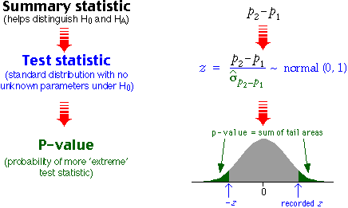
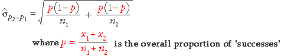
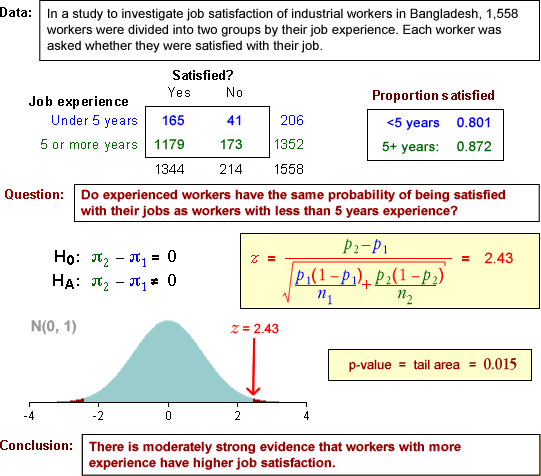
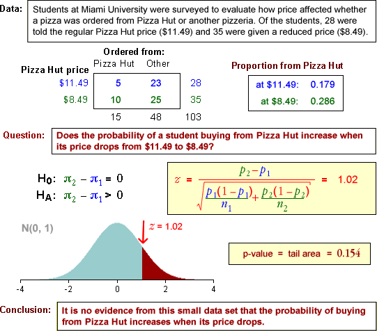

Two-tailed test
H0 : π1 = π2
HA : π1 ≠ π2
For this test, the steps involved in obtaining a p-value are:

The p-value is interpreted in the same way as for all previous tests. A p-value close to zero is unlikely when H0 is true, but is more likely when HA holds. Small p-values therefore provide evidence of a difference between the population probabilities.
One-tailed test
In a 1-tailed test, the alternative hypothesis is
HA : π1 − π2 > 0 or HA : π1 − π2 < 0
The test statistic is identical to that for a 2-tailed test and the p-value is obtained in a similar way, but it is found from only a single tail of the standard normal distribution.
Alternative test statistic
Since π1 and π2 are equal if H0 is true, the overall proportion of successes, p, can be used in the formula for the standard error of p2 - p1.

This refinement makes little difference in practice, so the examples below use the 'simpler' formula that we gave earlier.
Two-tailed example

One-tailed example
